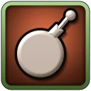

Status effect
Smoke Cloud
Smoke Cloud is a buff applied by commanders.
What it does
A unit with this effect: cannot be targeted by enemies.
This counts as a buff.
Stacking and duration
- It does not stack. A unit carries one copy at a time. Applying it again renews it: the longer of the time left and the new duration is kept.
See How status effects work for how effects stack, renew and expire, and Stat reference for what each stat means.
Applied by
| Source | Type of source | Duration |
|---|---|---|
| Smoke and Mirrors | Commander ability of Pip Quickfingers | 1.5 seconds |
 Smoke Bomb | Commander ability of Pip Quickfingers, unlocked by the talent Smoke Bomb | 1 second |
Back to the list of status effects.